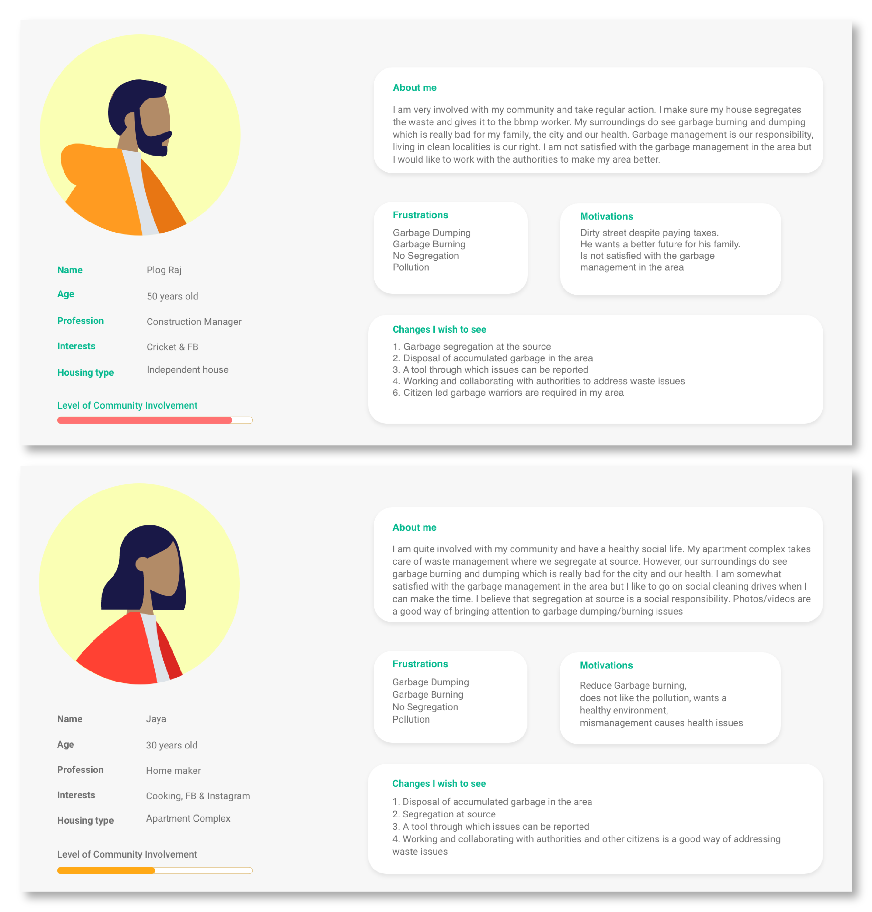
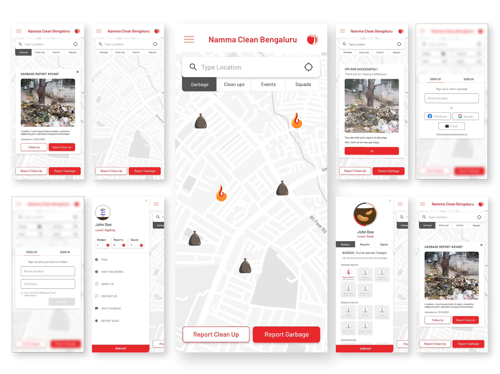
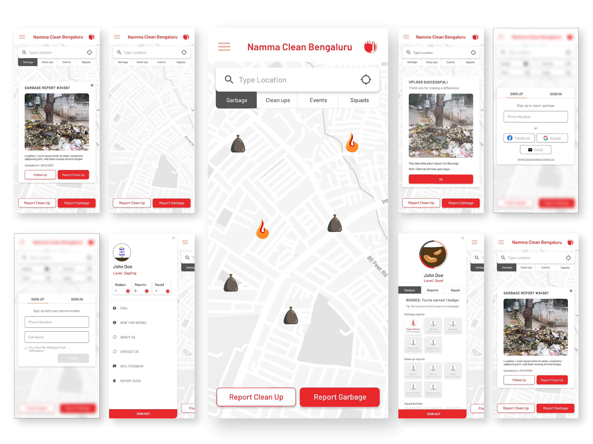
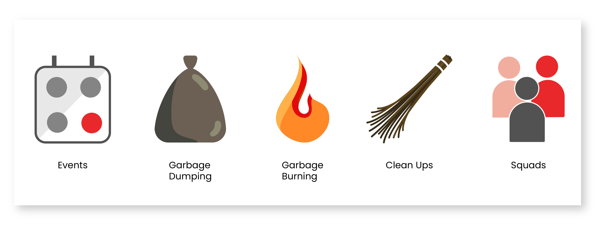
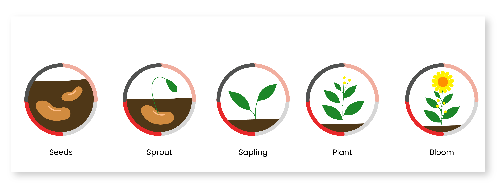
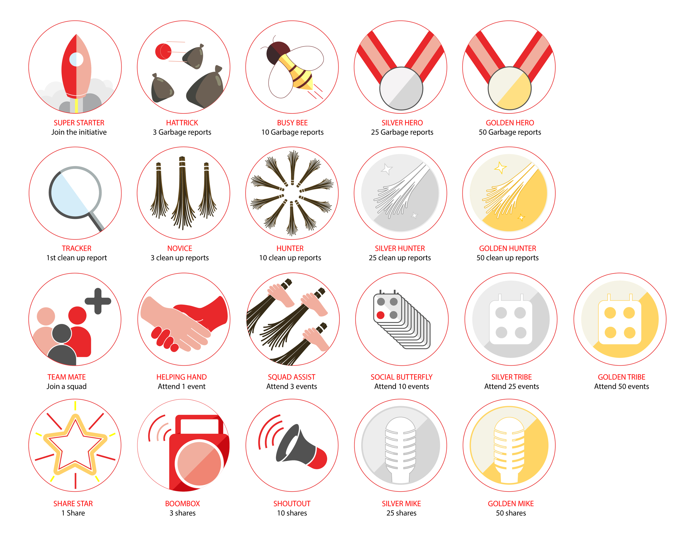

Introduction
Jhatkaa is an organisation that empowers citizens to take action with the help of various campaigns. Namma Clean Bengaluru is one such initiative to tackle the problem of garbage dumping and burning by increasing citizen involvement in tandem with the relevant authorities.
The Objective
To create a website where users can report garbage dumping and burning and also form squads to have clean up events.
My Role:
- Make User Personas based on client's research
- User Flow Mapping
- Create Wireframes
- Create Final Designs
- Create Illustrations
- Make a Logo
The Problem
Bengaluru has suffered from the problem of garbage dumping and burning for years which has also given it the nickname of “Garbage City” at times. Citizens litter anywhere and the municipality is not always able to clean it up.
The Solution
To create a platform which enables citizens to be more involved in the cleanliness of their city. Citizens would be able to report sightings of garbage, form squads to keep their wards clean and have clean up events. This would also help the relevant authorities to locate and clean up garbage more efficiently.
The Challenge
- To make the process of reporting easy and rewarding.
- To keep the users continually engaged with the platform over time.
- Create a PWA to show the multitude of information concentrated on a phone.
My Process
The clients came to me with a very good idea of what they wanted to build. Having worked with communities on the ground with their target audience, they already had a bank of research on the users. It was my job to take their idea and turn it into an end product.
User Personas
The first step was to sift through the user data that was collected by the clients and understand the frustrations and motivations of the users. I aggregated the vast data and created 2 personas, Raj and Jaya, representing the average users.
The users already have a certain level of involvement in clean ups around the city. They are dissatisfied with the level of cleanliness in their neighbourhoods and want to work with the authorities to make their areas better.
The users understand the individuals’ social responsibility about waste segregation at source and how the authorities’ struggle with cleaning the areas when individuals do not do their due diligence.
User Flow
After creating the user personas, a very thorough user flow was made.
The client already had a clear idea of what they wanted the product to function like. They wanted a map as the base with everything else working around it.
The functionalities that were shortlisted for the MVP:
- Garbage dumping reporting
- Garbage burning reporting
- Clean up reporting
- Squad joining
- Event joining
- Profile levels & Badges
The MVP with its shortlisted functionalities is live and working. It was decided to rely on WhatsApp for communication between users, squads and authorities as WhatsApp is used as the de facto messaging service in India.1, 2
This not only made the product much cheaper to develop and maintain, but it also makes it easier for people to reach out to their own contacts and new users.
A strategy used in the platform to keep user engagement up was taken from Nir Eyal’s book ‘Hooked’. Hooked by Nir Eyal is a book that explains how tech companies get people to use their products repeatedly. User habits are explained by the Hook Model which consists of four looping cycles: trigger, action, variable reward, and investment.3
Wireframe
Mobile phones being the primary access to the internet for the vast majority of the users in India3 was the deciding factor to develop a PWA first and foremost.
A high fidelity wireframe was created based on the user flow shown above.
A mobile first design strategy4, 5 was used for the product and was designed to be scaled easily into a full scale desktop website later.
Keeping the map as the base in mind, all the other functionality was placed on top of the map. The first thing the user would see on top would be the location search bar and the map filters (garbage, clean-ups, events and squads). The CTAs were kept at the bottom of the screen to have the quickest and easiest accessibility.
Only a few wireframe screens have been shown below.
Final Design
Several factors were taken into consideration to create the final designs such as:
- Emotions that we wanted to invoke in the users
- Colours to use for desired impact
- The tone of the language used
The emotions that we wanted to invoke in the users were action, responsibility, community participation and joy.
The colours that we primarily decided to use were Jhatkaa’s brand colours of red,white and grey as they also serve the purpose of invoking the feelings of action & urgency in this product.
Feelings of joy and community participation would be brought about by usage of illustrations in key places. Motivational and rewarding tools such as profile badges would also increase joy and user engagement and participation.
The language used throughout the product is friendly and rewarding, making sure to reward the user after they have invested in the cause.
 

Icons
Various types of icons were created for this project. An icon for the project itself was also created symbolising a community coming together to clean up Bengaluru.
Map Icons: These icons were made to be used on the map to depict specific filters.
Profile Icons: These icons were made for the different profile levels. It is a motivational means to increase user engagement. As the user keeps earning more badges, their profile grows from a seed to a full bloom.
Badges: A set of 21 badges were created as a motivational method to increase user engagement in all four fields of reporting garbage, checking clean-ups, joining events and squads.
Onboarding
A set of 4 minimal animations were created, in lottie format, for the onboarding process.
Sources
1: Source
2: Source
3: Source
4: Source
5: Source
Attributes: The device render for this project, shown on the Work page, has been sourced from mockup.store on Freepik.